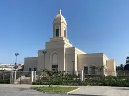

Temple Album
Home
Old
New
Large
Small
Temple Gallery
Aba temple, Nigeria
Abidjan-Ivory Coast Temple
Lagos Temple, Nigeria
Luanda Temple, Angola
Maputo Temple, mozambique
Monrovia temple, Liberia
Nairobi Temple, Kenya

Praia Temple, Cape Verde
Kampala temple, Uganda